Five deployed tools, built to real classroom constraints.
Each artifact below was shipped to students or teachers in the last two academic years, with the design decisions and, where available, the outcome data behind it. Figures carry confidence tags: verified, recorded, or approximate.
Two tools in this portfolio were deployed to AP Research students during the 2025-2026 school year: the AP Research Paper Analyzer and the RQ and Method Alignment Workshop. In the first exam cycle following deployment, the paper-component mean rose from 6.0 (2025) to 6.6 (2026), a statistically significant shift (p = .005, Cohen's d = 0.26; 2025-to-2026 cohorts of comparable size, with confounding classroom variables held constant across the year).
SPEEDS Explorer
A landscape-reading game deployed to AP Human Geography students, built through all five ADDIE phases with the decisions behind each phase recorded.
Open case → Deployed · AP ResearchLucy's Methods Lab
A self-paced AP Research methods module in Articulate Rise 360, designed against peer-reviewed research on gifted learners and a 70-method source catalog.
Open case → Deployed · DistrictCanvas APHG Teacher Launchpad
A self-paced Canvas course supporting district APHG teachers at any stage, designed against WCAG 2.1 Level AA for the 2027 ADA Title II deadline.
Open case → Deployed · AP ResearchAP Research Paper Analyzer
An AI feedback tool returning rubric-aligned scoring on a full paper in under a minute, running on free student accounts by architectural choice.
Open case → Deployed · AP ResearchRQ and Method Alignment Workshop
An AI-integrated workshop that evaluates student research questions and methods in real time, with organic adoption outside the pilot before formal release.
Open case →A landscape-reading game, built through ADDIE end to end
Here's the skill students were losing points on: reading a cultural landscape as evidence. SPEEDS Explorer is the game I built to make that skill practicable, deployed to APHG students and running on GitHub Pages with no login, no backend, and a whitelisted URL for district Chromebooks. Every ADDIE phase behind the build left a documented decision.
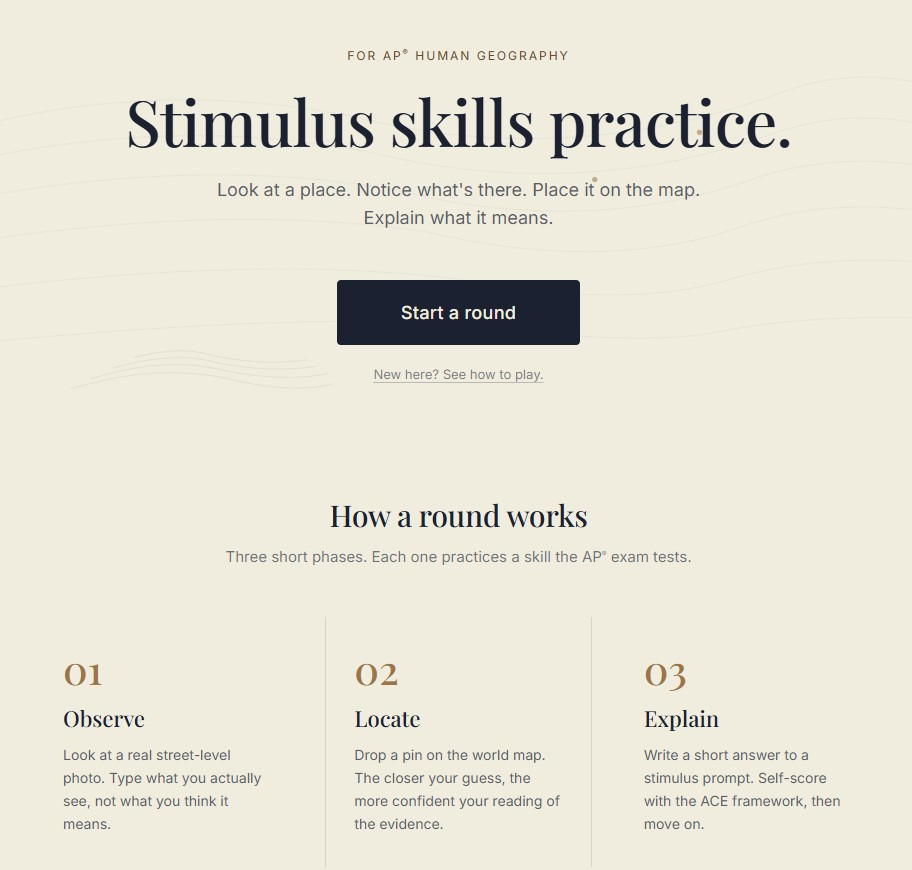
Find the real gap, not the assumed one
In March, with the May AP exam approaching, I asked a fellow AP teacher what skill her students most needed to build before test day. She identified stimulus analysis, a skill AP Human Geography requires and one her students were losing points on. I gathered the specific language students use when answering these prompts and the real-world scenarios where they appear, then defined my population: AP Human Geography students who had already been introduced to the skill but needed practice applying it.
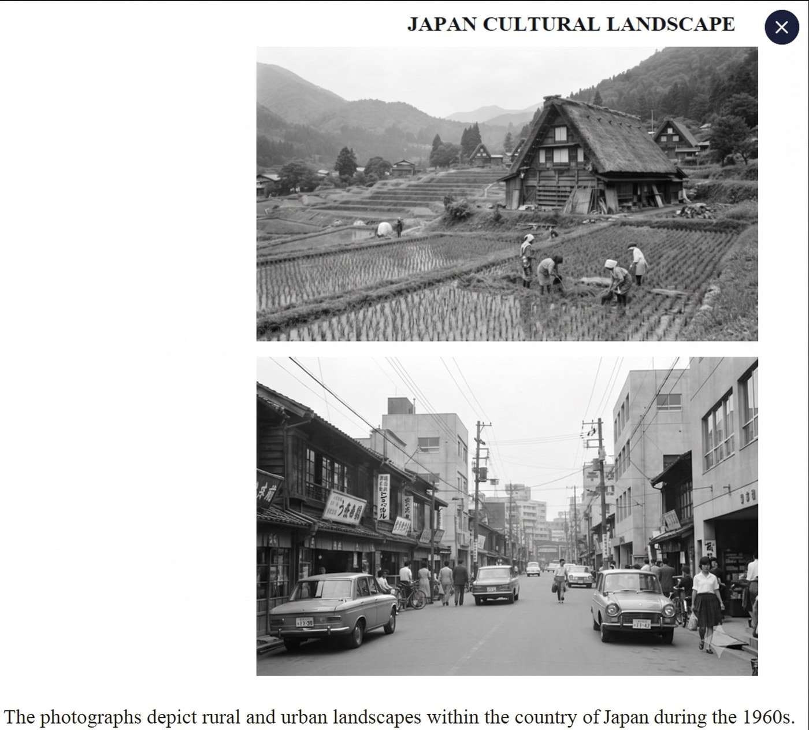
Rigor and motivation, held together
My core design problem was a tension I had to hold on both sides at once. The tool had to demand specific, rigorous answers, but it also had to stay engaging enough that students wanted to keep going. For the motivation side, I based the interaction on GeoGuessr, a game my students already enjoyed, where players study a location and guess where in the world it is, and I built the round around that same guessing structure. For the rigor side, I held students to real AP Human Geography vocabulary: to earn credit they had to name what they saw in the discipline's actual terms, so play reinforced the vocabulary the exam expects. To keep that standard fair rather than punishing, I designed the scoring to accept recognized variations of each term, so a student who used a legitimate alternate phrasing still earned the point. I also held a strict evidence standard, that a term counts only when it is actually visible in the image, not merely true of the place. I aligned with the AP teacher on where that benchmark should sit. At this stage I also identified the open questions the build would have to solve: where to source the images, how to pull them, and where to host the whole thing.
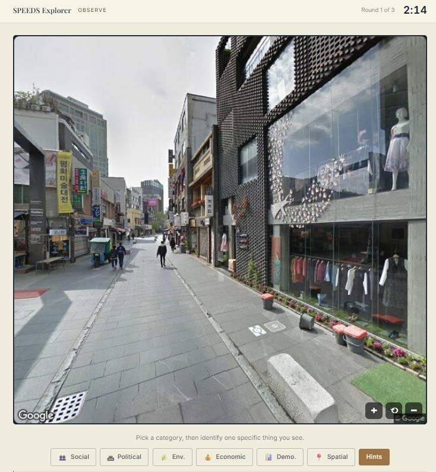
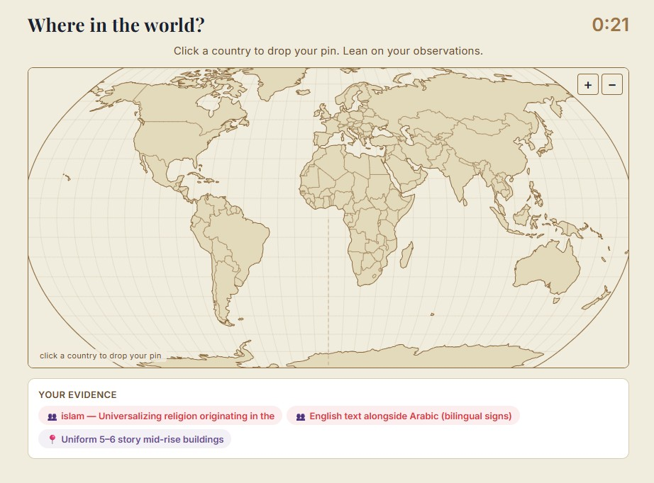
Build the knowledge base, then the pipeline that feeds it
With the design settled, I built the knowledge base that lets the tool read a photo the way an AP Human Geography student should. I assembled the vocabulary from course textbooks and openly accessible online course resources. The College Board CED, which has no glossary, I worked through by hand, sourcing its terms manually as a cross-check for alignment rather than feeding that material into the AI.
I then organized every term under an observation framework. I started from SPEED, a geography analysis tool credited to Ann Wurst through the National Council for Geographic Education, which sorts observations as Social, Political, Economic, Environmental, and Demographic. I extended it into SPEEDS by adding a sixth category, Spatial, since spatial reasoning is central to the discipline, and I grouped every vocabulary term under one of those six headings.
With the knowledge base structured, I built an image-analysis step, developed with Claude, that scans a location photo, identifies the SPEEDS-relevant features in it, and drafts the answer key for that image. I automated this deliberately rather than keying each location by hand, so the system could scale as the bank of locations grew. To feed it, I built a pull process on Google Maps that selects candidate locations by how likely they are to contain the features the scanner looks for, scoring each against a threshold before pulling it. The result was a repeatable loop: images pulled, scanned, and keys drafted, with no step done by hand once the system was running.
Once the loop worked, I built a prototype and ran it past two teachers as an early review, one of them the AP teacher I had consulted at the start. Her feedback changed the scope. She saw that the observation skill the tool was drilling is the same skill students use to answer Free Response Questions on the exam, where a stimulus has to be read and then used as evidence, and she wanted the tool to carry students into that next step. So I added a Free Response portion. It weaves the two halves together: students first identify what they see in the image, then use those same observations to answer an FRQ, which turns isolated practice into applied transfer. I based the prompts and their scoring on the response method these students had used all year, the ACE model, Answer, Cite, Expand, so the tool reinforced the exact framework their class already taught rather than introducing a competing one.
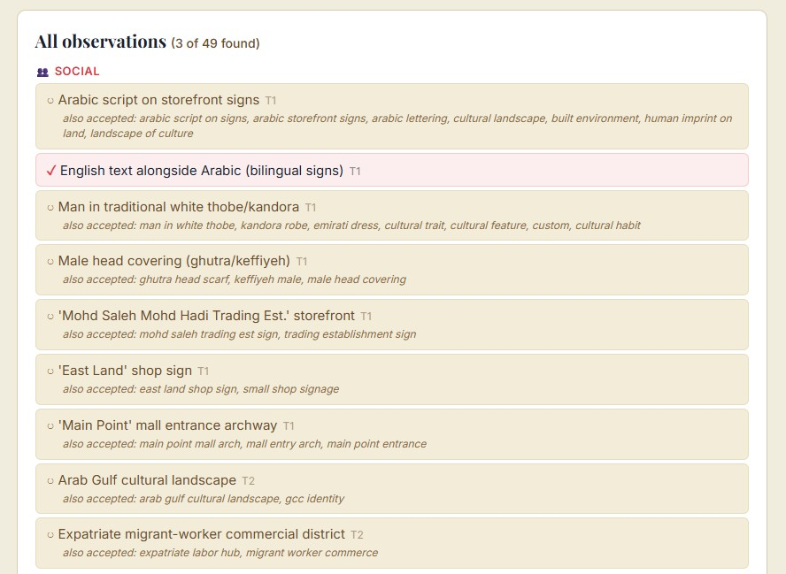
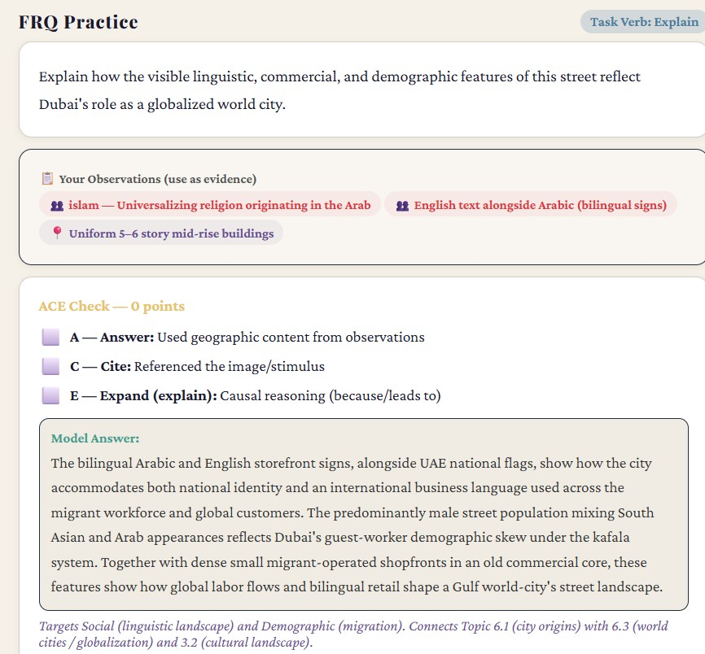
Prove access, then roll out
Implementation happened gradually, over three days. The AP Human Geography teachers first shared the tool with a small group of about five students, a deliberate check that the site cleared the campus whitelist and loaded on student devices before any wider release. Once access was confirmed, we rolled it out as a post-quiz activity, the task students work through on their own after finishing a quiz. I built a feedback channel in from the start, explicitly asking students to email me their problems and suggestions, so the rollout itself doubled as a live source of user feedback.
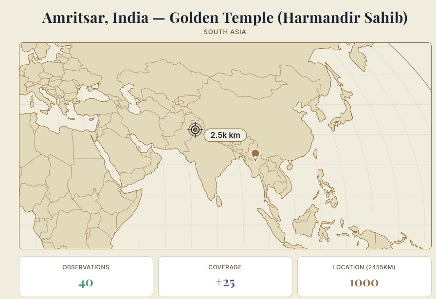
Read the feedback, name the limit, set up the measure
Evaluation ran on two levels. The first was formative and happened live during rollout, through the email channel I had built in. Two clear signals came back. One was a bug: on the locate screen, the map was not always dropping a student's pin where they clicked, which I traced and fixed. The other was that students kept asking for more images and locations. I read that appetite as an engagement signal, since students rarely ask for more of an activity they are not enjoying, though I hold that as an inference rather than a measured result. In response, I added more images and locations, widening the variety students had to work with.
The second level was summative. Both teachers who ran the tool gave strong positive feedback, specifically that it gamified a skill their students genuinely needed more practice on, and that it carried the observation work through into answering FRQs. For a read beyond my own campus, I shared the tool with a select group of AP Human Geography teachers nationally. The response was positive, and the tool has since spread to other campuses.
I am candid about the limit of this evidence. Because the tool has no backend, it collects no usage data, so I cannot yet point to measured learning gains. What I have is qualitative: student feedback, an engagement signal, teacher endorsement, and peer review. The one measurement I have set up is still pending: I will review participating students' AP exam scores when they arrive, to test whether the practice moved the needle on the exam itself.
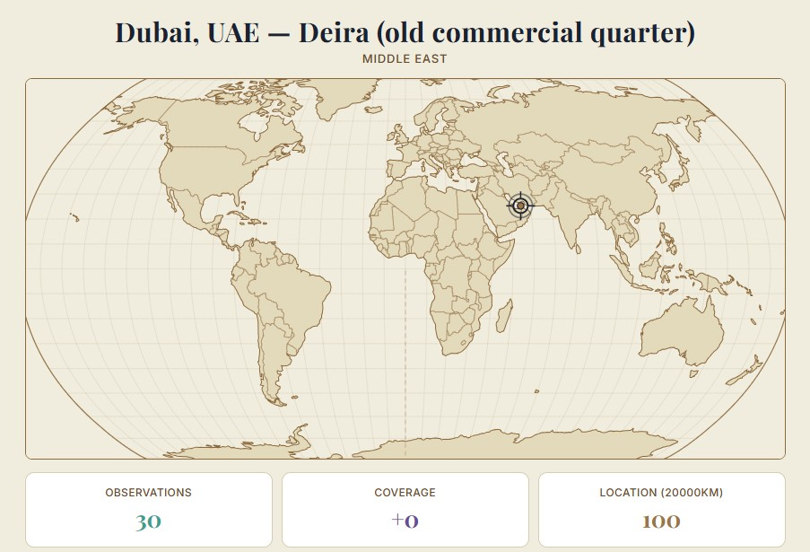
A methods module designed from the struggle
Here's what students most often get wrong in AP Research: they confuse a data-collection tool (a survey, an interview) with a method (correlational, thematic, historical). Lucy's Methods Lab is the self-paced Rise 360 module I built to make that distinction visible, deployed as an independent practice resource. Every design decision below traces back to a specific way learners were getting stuck.
The Problem
AP Research asks students to design and execute an original research study across a year. The single most common conceptual error is confusing a data-collection tool (a survey, an interview) with a method (descriptive, correlational, thematic analysis). The confusion cascades: a student who thinks a survey is a method cannot defend their choice of analysis, cannot align their claims to their evidence, and loses points on the rubric's method and new-understanding rows.
Standard remediation is a lecture, which the strongest students in the room have already tuned out. AP Research is a gifted-and-talented population; the pedagogy has to match.
What I Built
A Rise 360 module organized around a held-constant subject (a puppy named Lucy) as a controlled variable. Because the subject never changes across examples, any difference in the finding has to come from the method chosen. This is the module's spine and the fastest way to make the method-versus-tool distinction visible.
Peer-reviewed research on gifted learners drove the interaction design: choice, differentiation, and depth-on-demand rather than generic online-learning mechanics. Learners can branch deeper into any method they want to understand more fully. The module was written to how gifted learners tend to work best, not to a generic online-course template.
Source Discipline
The module rests on a 70-method source catalog built before any lesson was drafted. Every method entry records its source and page range first, so every written definition is a verified jump to a cited passage rather than a guess. Where a phrasing was the module's own synthesis rather than a sourced quote, it was flagged as such rather than dressed up as authority. This discipline carries into the module copy directly.
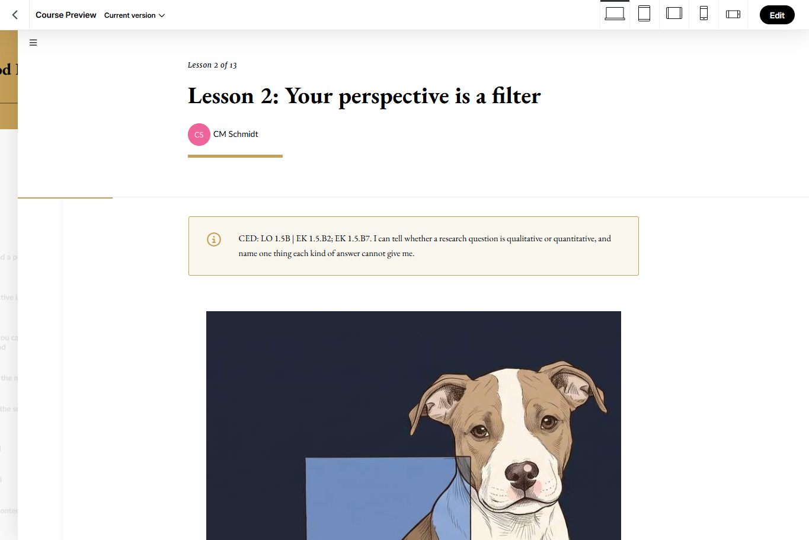
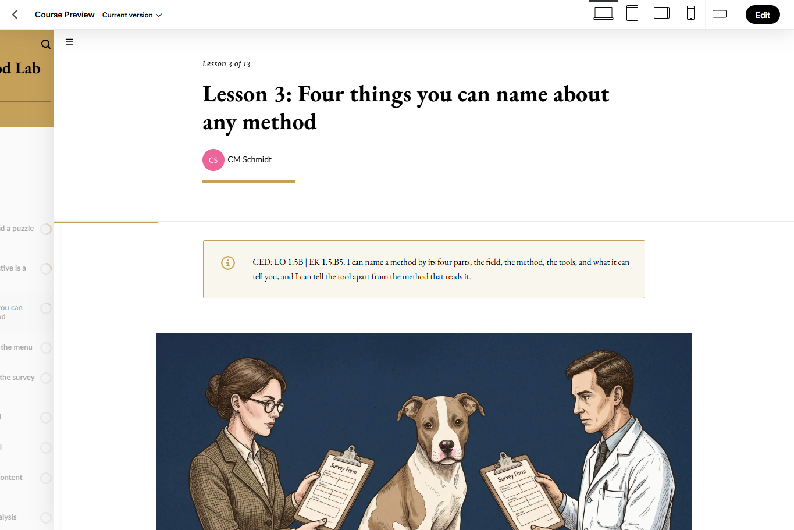
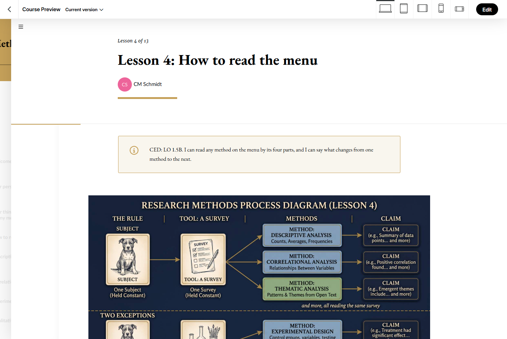
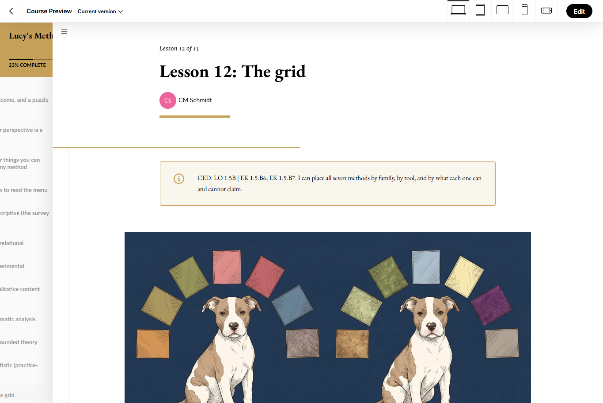
District support for APHG teachers, packaged as a portable Canvas course
Here's the reality on the ground: APHG teachers across a district arrive at the course with very different gaps and very different histories. The Canvas APHG Teacher Launchpad meets them where they are, packaged as a portable .imscc cartridge and designed against WCAG 2.1 Level AA ahead of the 2027 ADA Title II deadline.
The Problem
APHG is often the district's gateway AP course, taught to freshmen and frequently picked up alongside multiple other preps. Teachers arrive at it with different gaps:
- Novices need content orientation.
- Veterans want FRQ scoring calibration or a path toward the Reader pipeline.
Standard PD treats them all the same. Knowles' andragogy names the mismatch: adult learners work best when they can direct their own learning, set their own pace, and treat their prior experience as a resource rather than a reset.
What I Built
A Canvas course organized around three domains (Content, Skills, AP-Specific Knowledge) with two experience tiers. A Start Here module runs a self-assessment and recommends a path:
- New Instructors: route into Content Knowledge, Geographer's Skills, or AP-Specific Knowledge.
- Returning Instructors: route into the Veteran Scoring Studio or the Job Aids Library for quick, 5-to-10 minute operational tasks.
Every path is self-paced. The recommendation is just a recommendation; the teacher chooses.
Accessibility
Designed against WCAG 2.1 Level AA, the technical standard the DOJ's 2024 ADA Title II final rule requires for public school LMS course content. The compliance deadline for districts serving populations of 50,000 or more is April 26, 2027; HISD is well above that threshold. Design decisions were made with the standard in mind rather than added later: semantic heading structure on every page, color contrast held above the AA threshold in the palette, no color-only signaling, text alternatives written for every non-decorative image, and keyboard-navigable structure preserved through the .imscc import.
Deployment Status
Package imported cleanly into a Canvas sandbox. Prerequisite chains resolved on import. Every page renders with the design system intact.
Craft Note
Canvas's .imscc sanitizer strips style blocks and external fonts on import. Every page is authored in inline CSS with that constraint held in mind; the design system (dark green headers, gold accent rule, monospace time badges) survives the import because it was built to.
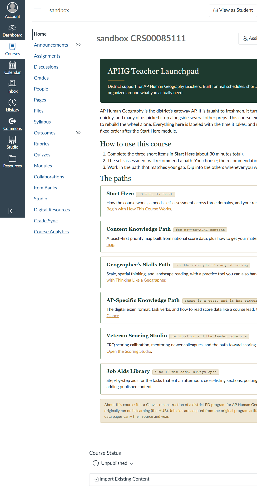
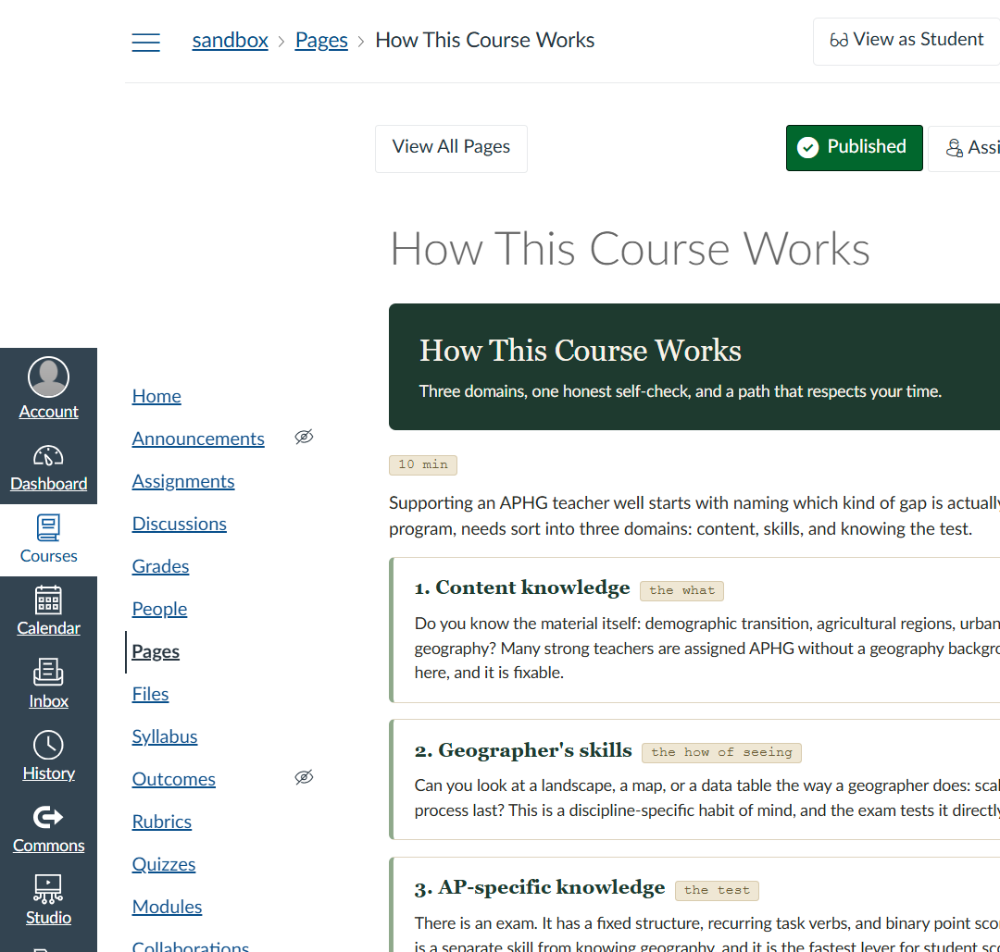
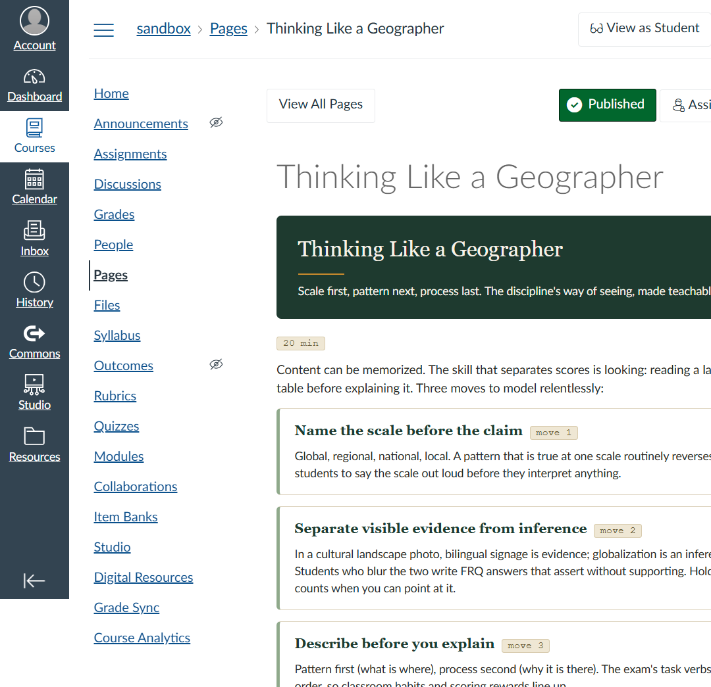
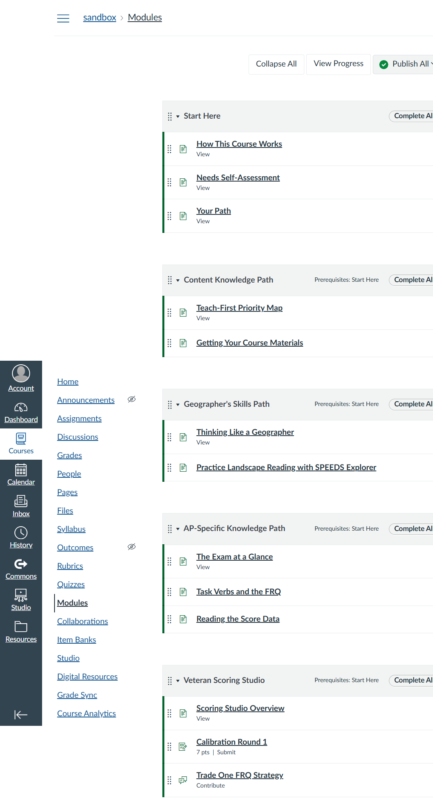
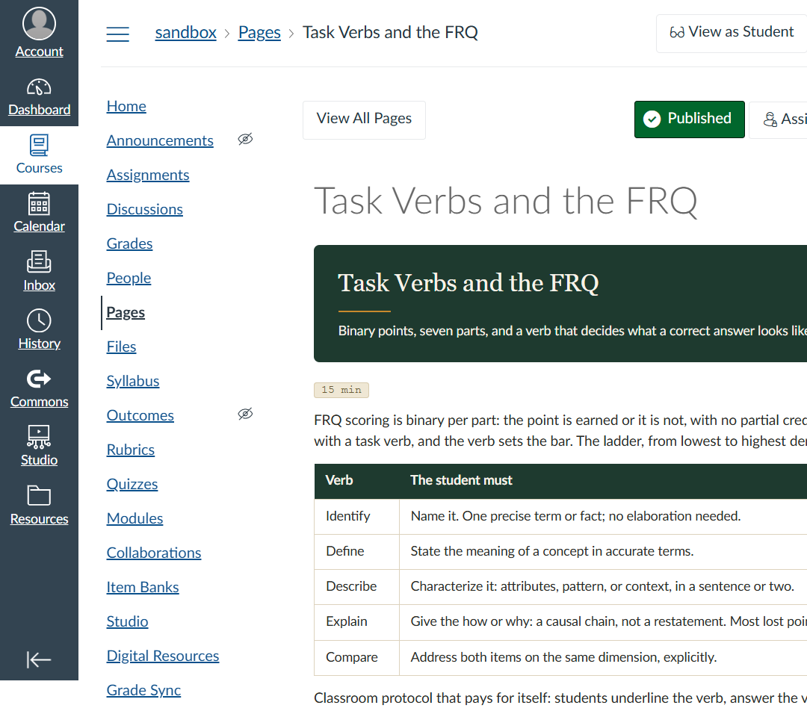
Rubric-aligned AI feedback on a full paper, on free student accounts
Here's what feedback at scale actually costs: about thirty cents per student per analysis on paid infrastructure, and PDF uploads that free student accounts cannot do. The Paper Analyzer is the free-account alternative, returning rubric-aligned, section-by-section scoring on a full paper in under a minute so no one is priced out of practice.
The Problem
AP Research asks students to write a 4,000-to-5,000-word academic paper scored against a six-row rubric. Two constraints shape the practice window:
- Iterative feedback at scale is hard. Teachers can conference deeply, but not with every student on every draft.
- Most AI feedback tools require paid accounts or PDF uploads, which puts a cost or access barrier between students and their own practice.
The build had to remove the barrier before it could help anyone.
What I Built
A rubric-aligned analyzer that accepts a full paper as pasted plain text and returns:
- An estimated holistic score on the 1-to-5 College Board scale.
- A ranked list of top revision priorities, each tied to specific passages in the student's own paper.
- Row-by-row rubric feedback across all six rows (focus, situating in scholarship, method, new understanding, communication, citation).
- Section-by-section feedback with strengths, weaknesses, and specific fixes.
- Recommended textbook chapters mapped to the weaknesses the tool actually found, capped at 1 to 3 so students are not overwhelmed.
- A live word-count indicator that turns green inside the 4,000-to-5,000-word requirement.
Every strength, weakness, and fix references specific passages in the student's own paper. No generic advice.
Architecture: Equity as a Design Constraint
Two build paths were on the table. Path A was a standalone web app with a serverless backend calling the Claude API and allowing PDF upload, at roughly $0.30 per analysis. Path B was a Claude.ai artifact routing through Claude.ai's built-in API proxy. Path A required either paid infrastructure or student PDF uploads, which free Claude.ai accounts cannot do. Path B runs on free accounts with no API key, no subscription, no teacher-managed backend.
Chose Path B. Traded a nicer PDF workflow for zero cost at the student level. This was the architectural decision that shaped everything else.
Calibration
Scoring logic was tuned against 11 anonymized student papers with verified 2025 AP Research scores across the 2-to-5 range, plus named exemplar anchors at Scores 3, 4, and 5. Two rubric principles were encoded from that calibration:
- The method row gates the new-understanding row. A weak method score suppresses the new-understanding score regardless of other strengths.
- Statistical overclaiming from small samples is the most common separator between adjacent score levels. Papers that honestly acknowledge non-significant results score higher than papers that inflate claims.
Differentiation Across Subjects and Formats
AP Research is topic-agnostic. Students choose their own research questions, so any given cohort produces papers spanning biology experiments, sociological surveys, historical analyses, literature reviews, and design-based creative projects. Each subject area carries different disciplinary conventions for what counts as strong scholarship.
The methods layer adds a second axis. The course accepts quantitative, qualitative, mixed-methods, and artistic-design papers. A correlational paper has statistical analysis; a thematic analysis has coding schemes; an artistic process paper has an aesthetic rationale rather than findings. Method as a rubric row looks radically different across these.
The tool holds the rubric constant while adapting to the paper in front of it. A physics paper does not get feedback shaped by literary analysis norms; a qualitative paper is not penalized for lacking p-values it should not have.
Diagnosis Wired to Remediation
Every weakness the tool surfaces is mapped to a specific chapter in a textbook students already have access to. Galvan and Galvan (Writing Literature Reviews) for lit-review weaknesses. Leedy and Ormrod (Practical Research) for method and design weaknesses. A paper with a strong lit review but a weak method gets only the Leedy and Ormrod recommendation. Students get the next step, not just the verdict.
Deployment Status
Deployed: AP Research 2026 exam cycle. Distributed to students via the shareable artifact link, with a one-page instruction handout at rollout.
Craft Note
Free Claude.ai accounts have a daily message limit. The student handout boxes two warnings at the top: paste plain text rather than uploading, and do not burn the daily limit on trivial runs. The tool is fast, but a student running it three times back-to-back on the same draft is out of feedback for the day.
Real-time coaching on the alignment students most often break
Here's where the alignment breaks: students are asked to write research questions and pick methods at the same time in the year, when neither craft is developed. This workshop moves students through an 11-step Evaluate → Train → Rewrite → Align workflow, checking whether their research question and method actually answer each other and returning targeted coaching in seconds.
The Problem
AP Research students are asked to write research questions and pick methods at the same time in the year, when neither craft is developed. Two failure modes dominate: research questions too broad to answer with any single method, and methods that answer a different question than the one the student wrote. Both are alignment problems, and both suppress the method-row score, which in turn caps the new-understanding score. Feedback that catches the alignment problem before the student has invested weeks of data collection is high-leverage; feedback that catches it after is not.
What I Built
An 11-step scaffolded workshop with four stages, marked in the tool's header: Evaluate → Train → Rewrite → Align. A student enters their discipline, topic, and research question. The tool evaluates the RQ across four dimensions (Focus & Scope, Researchability, Open-Endedness, Gap Potential) and returns color-coded status for each with specific critique. Where a dimension needs work, the tool routes the student into targeted training with worked examples in both quantitative and qualitative modes. The student rewrites, the tool re-evaluates, and only then does the workflow move to the method: an alignment analysis that names exactly where the RQ and method diverge (measurement validity, construct mismatch, sampling problems), followed by method training on question-type-to-method matching. The student rewrites again for alignment, and the workshop ends with a revision journey summary showing original RQ, after-training RQ, and final RQ side by side.
Adaptive Design
Alignment does not mean the same thing across methods, and the tool adapts. A historiographical question about mid-century fan letters gets feedback on archive access, primary-source anchoring, and gap potential relative to existing scholarship. A quantitative question about canine coat hardness gets feedback on measurement instruments, operationalized constructs, and comparison groups. The critique matches the discipline the student named at intake rather than pushing every student through a generic RQ rubric.
Source Discipline
Training screens cite the College Board CED, Leedy and Ormrod on how question framing determines data requirements, and Chief Reader observations on the most common alignment failures (for example, "many allowed method to drive inquiry rather than having method flow from the question"). Students see the same source ladder the AP Research course rests on, not a black-box AI critique.
Deployment Status
Deployed: AP Research 2026 exam cycle. Distributed via shareable artifact link, same free-account architecture as the Paper Analyzer. Initial release to a test group of 5 students; organic sharing outside the school preceded formal rollout to the full class.
The Workflow in Screenshots
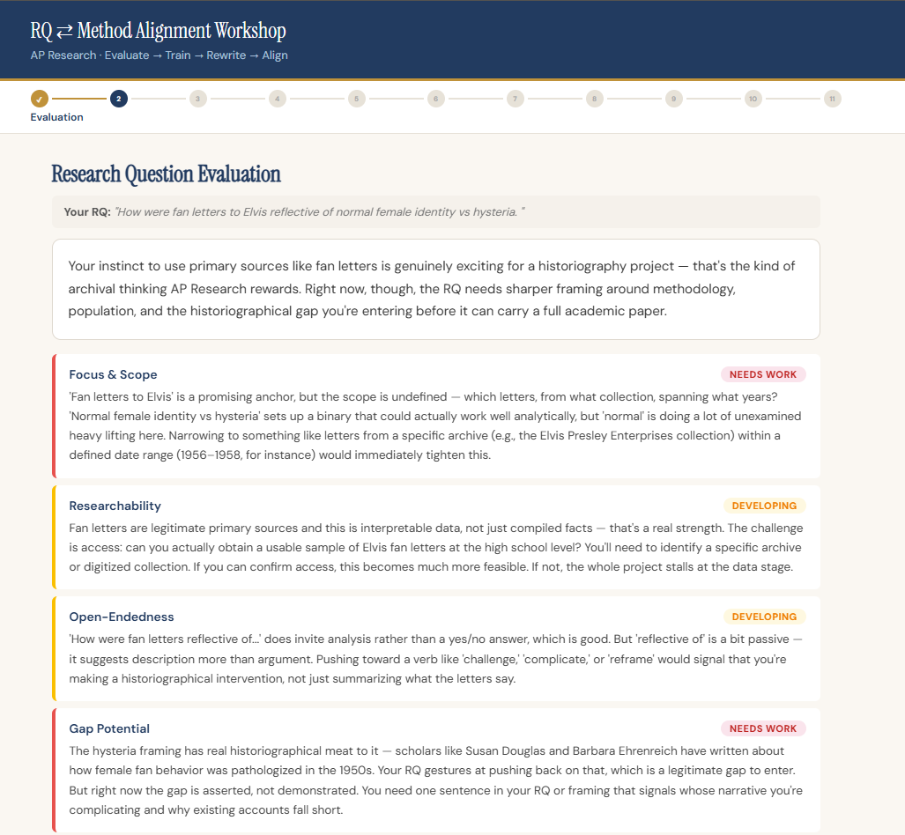
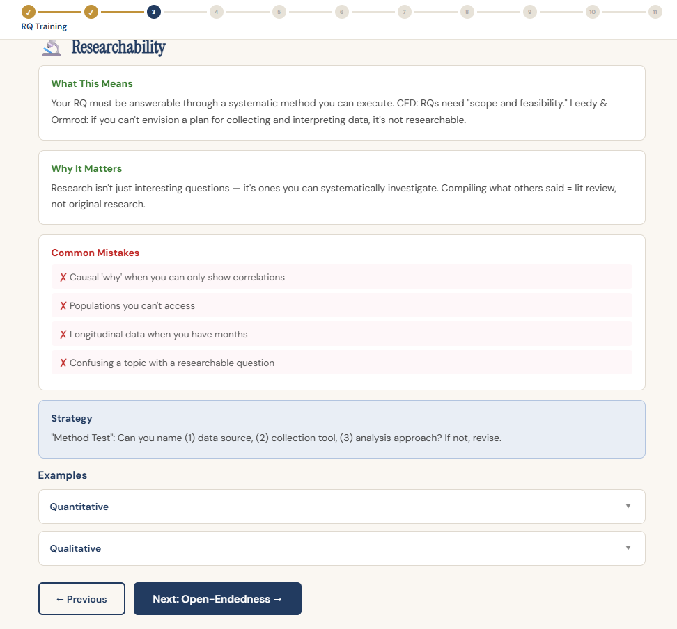
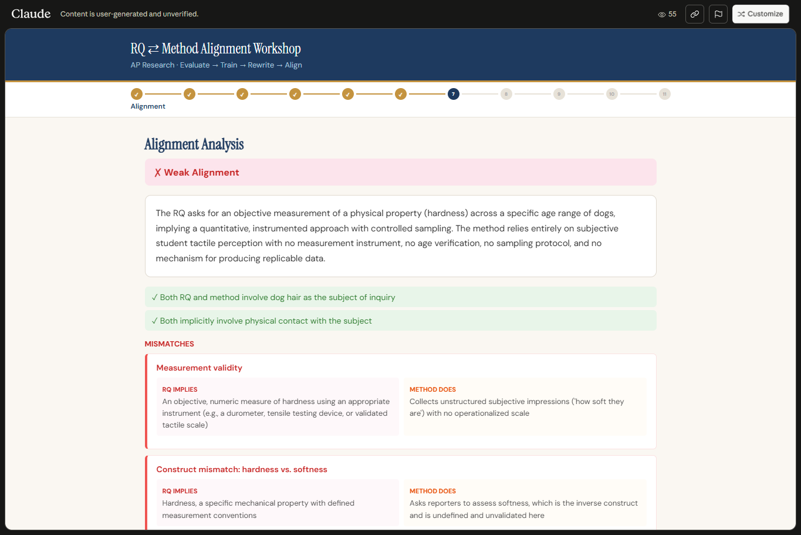
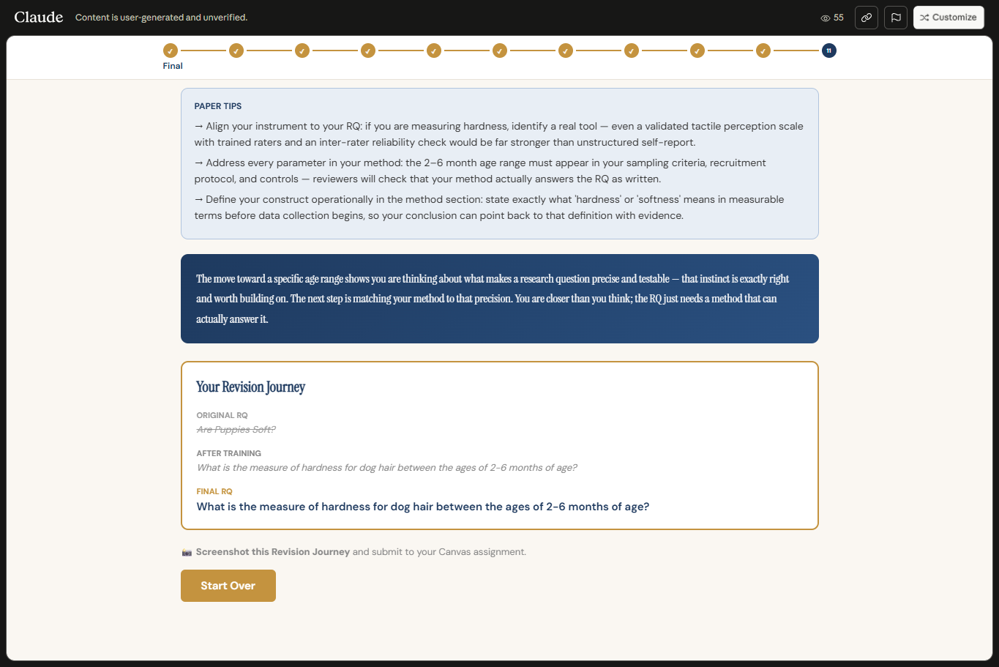
The same habits run through every case above.
Evidence for assertion
Every claim is fact-checked and source-verified before it goes into a tool, a lesson, or a portfolio. Verification is built into my systems, not applied after the fact. The confidence tags on this site (verified, recorded, approximate) are the same tags I use on my own working documents, so a reader knows what rests on hard evidence and what is my own synthesis.
Observe, diagnose, act
I watch how work actually happens, find where it slows or breaks down, and then research and build a fix for the specific bottleneck. Every tool in this portfolio started as a bottleneck I noticed in the classroom: stimulus-analysis practice was hit-or-miss, so I built SPEEDS Explorer; teacher onboarding was one-size-fits-all, so I built the Canvas Launchpad; students could not get feedback on drafts fast enough to iterate, so I built the Paper Analyzer.
Diagnosis with a next step
A verdict without a path is not instruction. Each tool pairs the problem it finds with a specific, reachable resource, so feedback moves a learner forward.
Ship on real constraints
Locked-down devices, free accounts, and no backend are not excuses, they are the brief. Each limit becomes a property of the product: privacy, portability, zero cost, and access for every student before one logs in.
Evidence Footprint
Design decisions across the portfolio are anchored in structured evidence, not intuition. Eleven anonymized AP Research papers with verified 2025 College Board scores calibrated the Paper Analyzer's scoring logic. Roughly 140 AP Human Geography CED terms, extracted by hand from primary sources and tagged for photo-observability, ground the SPEEDS Explorer matching engine. A 70-method catalog with source and page recorded before any definition was written backs Lucy's Methods Lab. The 2026 AP Research exam cycle provides the first outcome measure across two deployed tools.
Teacher first, builder by necessity.
I teach in the AP Capstone program at a top 50 public high school in the United States. My students are spectacular and think in a wide range of ways, so I adapt constantly to meet them where they are. When I see a need, my instinct is to act on it and resolve it at the source, finding systemic solutions rather than band-aid fixes. The tools in this portfolio came out of that instinct. Each exists because a specific group of students or teachers needed something that did not exist yet, and building it myself was faster and truer to the problem than waiting for a product to fill the gap.
That path, teaching a rigorous skill and then constructing the system that scales it, is the work I want to do next: instructional design, learning experience design, and assessment-adjacent roles. Building solutions from a careful read of what learners actually need is the work I keep coming back to, and it is what I want to do more of.
- Current role
- AP Research & AP Human Geography, AP Capstone program; AP District Lead
- Focus
- Instructional design, learning experience design, evidence-based assessment
- Builds on
- College Board CED and scoring guidelines, peer-reviewed methodology texts, primary-source extraction